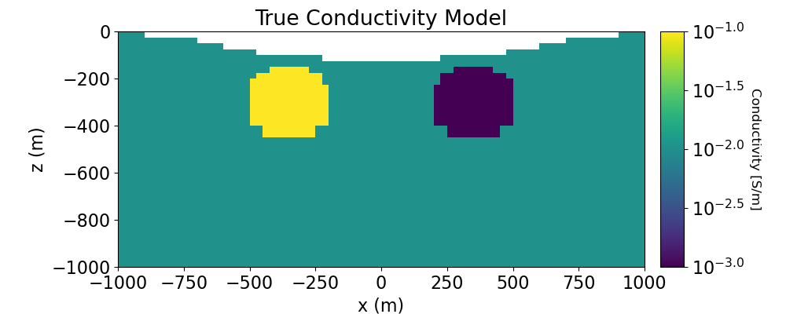
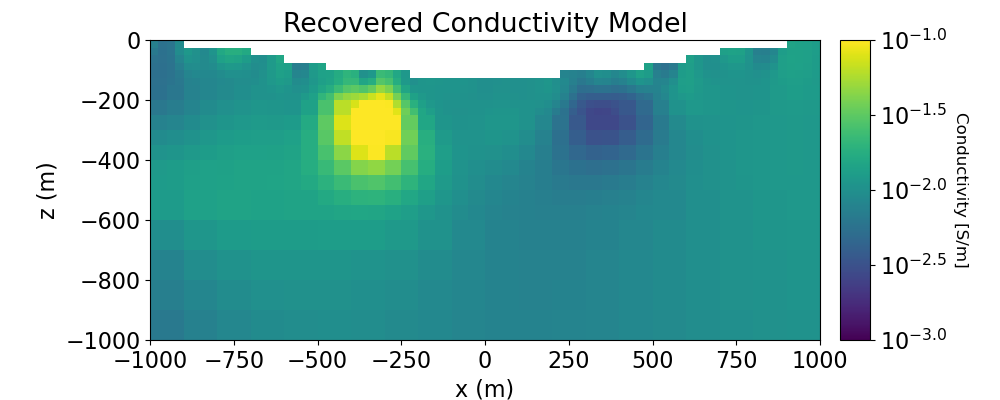

Note
Go to the end to download the full example code.
3D Least-Squares Inversion of DC Resistivity Data#
Here we invert 5 lines of DC data to recover an electrical conductivity model. We formulate the corresponding inverse problem as a least-squares optimization problem. For this tutorial, we focus on the following:
Generating a mesh based on survey geometry
Including surface topography
Defining the inverse problem (data misfit, regularization, directives)
Applying sensitivity weighting
Plotting the recovered model and data misfit
The DC data are measured voltages normalized by the source current in V/A.
Import Modules#
import os
import numpy as np
import matplotlib as mpl
import matplotlib.pyplot as plt
import tarfile
from discretize import TreeMesh
from discretize.utils import refine_tree_xyz, active_from_xyz
from simpeg.utils import model_builder
from simpeg.utils.io_utils.io_utils_electromagnetics import read_dcip_xyz
from simpeg import (
maps,
data_misfit,
regularization,
optimization,
inverse_problem,
inversion,
directives,
utils,
)
from simpeg.electromagnetics.static import resistivity as dc
from simpeg.electromagnetics.static.utils.static_utils import (
apparent_resistivity_from_voltage,
)
# To plot DC/IP data in 3D, the user must have the plotly package
try:
import plotly
from simpeg.electromagnetics.static.utils.static_utils import plot_3d_pseudosection
has_plotly = True
except ImportError:
has_plotly = False
pass
try:
from pymatsolver import Pardiso as Solver
except ImportError:
from simpeg import SolverLU as Solver
mpl.rcParams.update({"font.size": 16})
# sphinx_gallery_thumbnail_number = 3
Download Assets#
Here we provide the file paths to assets we need to run the inversion. The path to the true model conductivity and chargeability models are also provided for comparison with the inversion results. These files are stored as a tar-file on our google cloud bucket: “https://storage.googleapis.com/simpeg/doc-assets/dcr3d.tar.gz”
# storage bucket where we have the data
data_source = "https://storage.googleapis.com/simpeg/doc-assets/dcr3d.tar.gz"
# download the data
downloaded_data = utils.download(data_source, overwrite=True)
# unzip the tarfile
tar = tarfile.open(downloaded_data, "r")
tar.extractall()
tar.close()
# path to the directory containing our data
dir_path = downloaded_data.split(".")[0] + os.path.sep
# files to work with
topo_filename = dir_path + "topo_xyz.txt"
dc_data_filename = dir_path + "dc_data.xyz"
overwriting /home/vsts/work/1/s/tutorials/05-dcr/dcr3d.tar.gz
Downloading https://storage.googleapis.com/simpeg/doc-assets/dcr3d.tar.gz
saved to: /home/vsts/work/1/s/tutorials/05-dcr/dcr3d.tar.gz
Download completed!
Load Data and Topography#
Here we load the observed data and topography.
topo_xyz = np.loadtxt(str(topo_filename))
dc_data = read_dcip_xyz(
dc_data_filename,
"volt",
data_header="V/A",
uncertainties_header="UNCERT",
is_surface_data=False,
)
Plot Observed Data in Pseudosection#
Here we plot the observed DC and IP data in 3D pseudosections. To use this utility, you must have Python’s plotly package. Here, we represent the DC data as apparent conductivities and the IP data as apparent chargeabilities.
# Convert predicted data to apparent conductivities
apparent_conductivity = 1 / apparent_resistivity_from_voltage(
dc_data.survey,
dc_data.dobs,
)
if has_plotly:
fig = plot_3d_pseudosection(
dc_data.survey,
apparent_conductivity,
scale="log",
units="S/m",
plane_distance=15,
)
fig.update_layout(
title_text="Apparent Conductivity",
title_x=0.5,
title_font_size=24,
width=650,
height=500,
scene_camera=dict(
center=dict(x=0, y=0, z=-0.4), eye=dict(x=1.5, y=-1.5, z=1.8)
),
)
plotly.io.show(fig)
else:
print("INSTALL 'PLOTLY' TO VISUALIZE 3D PSEUDOSECTIONS")
Assign Uncertainties#
Inversion with SimPEG requires that we define the uncertainties on our data. This represents our estimate of the standard deviation of the noise in our data. For DC data, the uncertainties are 10% of the absolute value.
dc_data.standard_deviation = 0.1 * np.abs(dc_data.dobs)
Create Tree Mesh#
Here, we create the Tree mesh that will be used to invert DC data.
dh = 25.0 # base cell width
dom_width_x = 6000.0 # domain width x
dom_width_y = 6000.0 # domain width y
dom_width_z = 4000.0 # domain width z
nbcx = 2 ** int(np.round(np.log(dom_width_x / dh) / np.log(2.0))) # num. base cells x
nbcy = 2 ** int(np.round(np.log(dom_width_y / dh) / np.log(2.0))) # num. base cells y
nbcz = 2 ** int(np.round(np.log(dom_width_z / dh) / np.log(2.0))) # num. base cells z
# Define the base mesh
hx = [(dh, nbcx)]
hy = [(dh, nbcy)]
hz = [(dh, nbcz)]
mesh = TreeMesh([hx, hy, hz], x0="CCN")
# Mesh refinement based on topography
k = np.sqrt(np.sum(topo_xyz[:, 0:2] ** 2, axis=1)) < 1200
mesh = refine_tree_xyz(
mesh, topo_xyz[k, :], octree_levels=[0, 6, 8], method="surface", finalize=False
)
# Mesh refinement near sources and receivers.
electrode_locations = np.r_[
dc_data.survey.locations_a,
dc_data.survey.locations_b,
dc_data.survey.locations_m,
dc_data.survey.locations_n,
]
unique_locations = np.unique(electrode_locations, axis=0)
mesh = refine_tree_xyz(
mesh, unique_locations, octree_levels=[4, 6, 4], method="radial", finalize=False
)
# Finalize the mesh
mesh.finalize()
/home/vsts/work/1/s/tutorials/05-dcr/plot_inv_3_dcr3d.py:203: DeprecationWarning:
The surface option is deprecated as of `0.9.0` please update your code to use the `TreeMesh.refine_surface` functionality. It will be removed in a future version of discretize.
/home/vsts/work/1/s/tutorials/05-dcr/plot_inv_3_dcr3d.py:215: DeprecationWarning:
The radial option is deprecated as of `0.9.0` please update your code to use the `TreeMesh.refine_points` functionality. It will be removed in a future version of discretize.
Project Electrodes to Discretized Topography#
It is important that electrodes are not modeled as being in the air. Even if the electrodes are properly located along surface topography, they may lie above the discretized topography. This step is carried out to ensure all electrodes lie on the discretized surface.
# Find cells that lie below surface topography
ind_active = active_from_xyz(mesh, topo_xyz)
# Extract survey from data object
dc_survey = dc_data.survey
# Shift electrodes to the surface of discretized topography
dc_survey.drape_electrodes_on_topography(mesh, ind_active, option="top")
# Reset survey in data object
dc_data.survey = dc_survey
Starting/Reference Model and Mapping on OcTree Mesh#
Here, we create starting and/or reference models for the DC inversion as well as the mapping from the model space to the active cells. Starting and reference models can be a constant background value or contain a-priori structures. Here, the starting model is the natural log of 0.01 S/m.
# Define conductivity model in S/m (or resistivity model in Ohm m)
air_conductivity = np.log(1e-8)
background_conductivity = np.log(1e-2)
# Define the mapping from active cells to the entire domain
active_map = maps.InjectActiveCells(mesh, ind_active, np.exp(air_conductivity))
nC = int(ind_active.sum())
# Define the mapping from the model to the conductivity of the entire domain
conductivity_map = active_map * maps.ExpMap()
# Define starting model
starting_conductivity_model = background_conductivity * np.ones(nC)
Define the Physics of the DC Simulation#
Here, we define the physics of the DC resistivity simulation.
Define DC Inverse Problem#
The inverse problem is defined by 3 things:
Data Misfit: a measure of how well our recovered model explains the field data
Regularization: constraints placed on the recovered model and a priori information
Optimization: the numerical approach used to solve the inverse problem
# Define the data misfit. Here the data misfit is the L2 norm of the weighted
# residual between the observed data and the data predicted for a given model.
# Within the data misfit, the residual between predicted and observed data are
# normalized by the data's standard deviation.
dc_data_misfit = data_misfit.L2DataMisfit(data=dc_data, simulation=dc_simulation)
# Define the regularization (model objective function)
dc_regularization = regularization.WeightedLeastSquares(
mesh,
active_cells=ind_active,
reference_model=starting_conductivity_model,
)
dc_regularization.reference_model_in_smooth = (
True # Include reference model in smoothness
)
# Define how the optimization problem is solved.
dc_optimization = optimization.InexactGaussNewton(
maxIter=15, maxIterLS=20, maxIterCG=30, tolCG=1e-2
)
# Here we define the inverse problem that is to be solved
dc_inverse_problem = inverse_problem.BaseInvProblem(
dc_data_misfit, dc_regularization, dc_optimization
)
Define DC Inversion Directives#
Here we define any directives that are carried out during the inversion. This includes the cooling schedule for the trade-off parameter (beta), stopping criteria for the inversion and saving inversion results at each iteration.
# Apply and update sensitivity weighting as the model updates
update_sensitivity_weighting = directives.UpdateSensitivityWeights()
# Defining a starting value for the trade-off parameter (beta) between the data
# misfit and the regularization.
starting_beta = directives.BetaEstimate_ByEig(beta0_ratio=1e1)
# Set the rate of reduction in trade-off parameter (beta) each time the
# the inverse problem is solved. And set the number of Gauss-Newton iterations
# for each trade-off paramter value.
beta_schedule = directives.BetaSchedule(coolingFactor=2.5, coolingRate=2)
# Options for outputting recovered models and predicted data for each beta.
save_iteration = directives.SaveOutputEveryIteration(save_txt=False)
# Setting a stopping criteria for the inversion.
target_misfit = directives.TargetMisfit(chifact=1)
# Apply and update preconditioner as the model updates
update_jacobi = directives.UpdatePreconditioner()
directives_list = [
update_sensitivity_weighting,
starting_beta,
beta_schedule,
save_iteration,
target_misfit,
update_jacobi,
]
Running the DC Inversion#
To define the inversion object, we need to define the inversion problem and the set of directives. We can then run the inversion.
# Here we combine the inverse problem and the set of directives
dc_inversion = inversion.BaseInversion(
dc_inverse_problem, directiveList=directives_list
)
# Run inversion
recovered_conductivity_model = dc_inversion.run(starting_conductivity_model)
Running inversion with SimPEG v0.22.2
simpeg.InvProblem is setting bfgsH0 to the inverse of the eval2Deriv.
***Done using same Solver, and solver_opts as the Simulation3DNodal problem***
model has any nan: 0
============================ Inexact Gauss Newton ============================
# beta phi_d phi_m f |proj(x-g)-x| LS Comment
-----------------------------------------------------------------------------
x0 has any nan: 0
0 1.12e-02 1.95e+04 0.00e+00 1.95e+04 1.90e+03 0
1 1.12e-02 4.94e+03 3.23e+05 8.57e+03 9.27e+01 0
2 4.49e-03 5.04e+03 3.09e+05 6.43e+03 3.97e+02 0
3 4.49e-03 2.54e+03 6.70e+05 5.55e+03 4.57e+01 0
4 1.80e-03 2.67e+03 6.36e+05 3.81e+03 2.59e+02 0
5 1.80e-03 1.17e+03 1.16e+06 3.25e+03 2.89e+01 0
6 7.18e-04 1.20e+03 1.13e+06 2.01e+03 1.58e+02 0
7 7.18e-04 4.78e+02 1.74e+06 1.73e+03 1.58e+01 0
8 2.87e-04 4.95e+02 1.71e+06 9.85e+02 8.62e+01 0
------------------------- STOP! -------------------------
1 : |fc-fOld| = 0.0000e+00 <= tolF*(1+|f0|) = 1.9456e+03
1 : |xc-x_last| = 1.7029e+01 <= tolX*(1+|x0|) = 8.6240e+01
0 : |proj(x-g)-x| = 8.6227e+01 <= tolG = 1.0000e-01
0 : |proj(x-g)-x| = 8.6227e+01 <= 1e3*eps = 1.0000e-02
0 : maxIter = 15 <= iter = 9
------------------------- DONE! -------------------------
Recreate True Conductivity Model#
# Define conductivity model in S/m (or resistivity model in Ohm m)
background_value = 1e-2
conductor_value = 1e-1
resistor_value = 1e-3
# Define model
true_conductivity_model = background_value * np.ones(nC)
ind_conductor = model_builder.get_indices_sphere(
np.r_[-350.0, 0.0, -300.0], 160.0, mesh.cell_centers[ind_active, :]
)
true_conductivity_model[ind_conductor] = conductor_value
ind_resistor = model_builder.get_indices_sphere(
np.r_[350.0, 0.0, -300.0], 160.0, mesh.cell_centers[ind_active, :]
)
true_conductivity_model[ind_resistor] = resistor_value
true_conductivity_model_log10 = np.log10(true_conductivity_model)
Plotting True and Recovered Conductivity Model#
# Plot True Model
fig = plt.figure(figsize=(10, 4))
plotting_map = maps.InjectActiveCells(mesh, ind_active, np.nan)
ax1 = fig.add_axes([0.15, 0.15, 0.67, 0.75])
mesh.plot_slice(
plotting_map * true_conductivity_model_log10,
ax=ax1,
normal="Y",
ind=int(len(mesh.h[1]) / 2),
grid=False,
clim=(true_conductivity_model_log10.min(), true_conductivity_model_log10.max()),
pcolor_opts={"cmap": mpl.cm.viridis},
)
ax1.set_title("True Conductivity Model")
ax1.set_xlabel("x (m)")
ax1.set_ylabel("z (m)")
ax1.set_xlim([-1000, 1000])
ax1.set_ylim([-1000, 0])
ax2 = fig.add_axes([0.84, 0.15, 0.03, 0.75])
norm = mpl.colors.Normalize(
vmin=true_conductivity_model_log10.min(), vmax=true_conductivity_model_log10.max()
)
cbar = mpl.colorbar.ColorbarBase(
ax2, cmap=mpl.cm.viridis, norm=norm, orientation="vertical", format="$10^{%.1f}$"
)
cbar.set_label("Conductivity [S/m]", rotation=270, labelpad=15, size=12)
# Plot recovered model
recovered_conductivity_model_log10 = np.log10(np.exp(recovered_conductivity_model))
fig = plt.figure(figsize=(10, 4))
ax1 = fig.add_axes([0.15, 0.15, 0.67, 0.75])
mesh.plot_slice(
plotting_map * recovered_conductivity_model_log10,
ax=ax1,
normal="Y",
ind=int(len(mesh.h[1]) / 2),
grid=False,
clim=(true_conductivity_model_log10.min(), true_conductivity_model_log10.max()),
pcolor_opts={"cmap": mpl.cm.viridis},
)
ax1.set_title("Recovered Conductivity Model")
ax1.set_xlabel("x (m)")
ax1.set_ylabel("z (m)")
ax1.set_xlim([-1000, 1000])
ax1.set_ylim([-1000, 0])
ax2 = fig.add_axes([0.84, 0.15, 0.03, 0.75])
norm = mpl.colors.Normalize(
vmin=true_conductivity_model_log10.min(), vmax=true_conductivity_model_log10.max()
)
cbar = mpl.colorbar.ColorbarBase(
ax2, cmap=mpl.cm.viridis, norm=norm, orientation="vertical", format="$10^{%.1f}$"
)
cbar.set_label("Conductivity [S/m]", rotation=270, labelpad=15, size=12)
plt.show()
- 
- 
Plotting Normalized Data Misfit or Predicted DC Data#
To see how well the recovered model reproduces the observed data, it is a good idea to compare the predicted and observed data. Here, we accomplish this by plotting the normalized misfit.
# Predicted data from recovered model
dpred_dc = dc_inverse_problem.dpred
# Compute the normalized data misfit
dc_normalized_misfit = (dc_data.dobs - dpred_dc) / dc_data.standard_deviation
if has_plotly:
# Plot IP Data
fig = plot_3d_pseudosection(
dc_data.survey,
dc_normalized_misfit,
scale="linear",
units="",
vlim=[-2, 2],
plane_distance=15,
)
fig.update_layout(
title_text="Normalized Data Misfit",
title_x=0.5,
title_font_size=24,
width=650,
height=500,
scene_camera=dict(
center=dict(x=0, y=0, z=-0.4), eye=dict(x=1.5, y=-1.5, z=1.8)
),
)
plotly.io.show(fig)
else:
print("INSTALL 'PLOTLY' TO VISUALIZE 3D PSEUDOSECTIONS")
Total running time of the script: (3 minutes 11.902 seconds)
Estimated memory usage: 163 MB